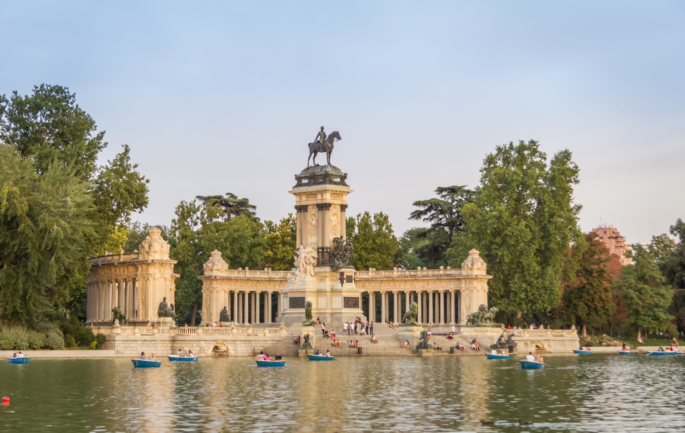
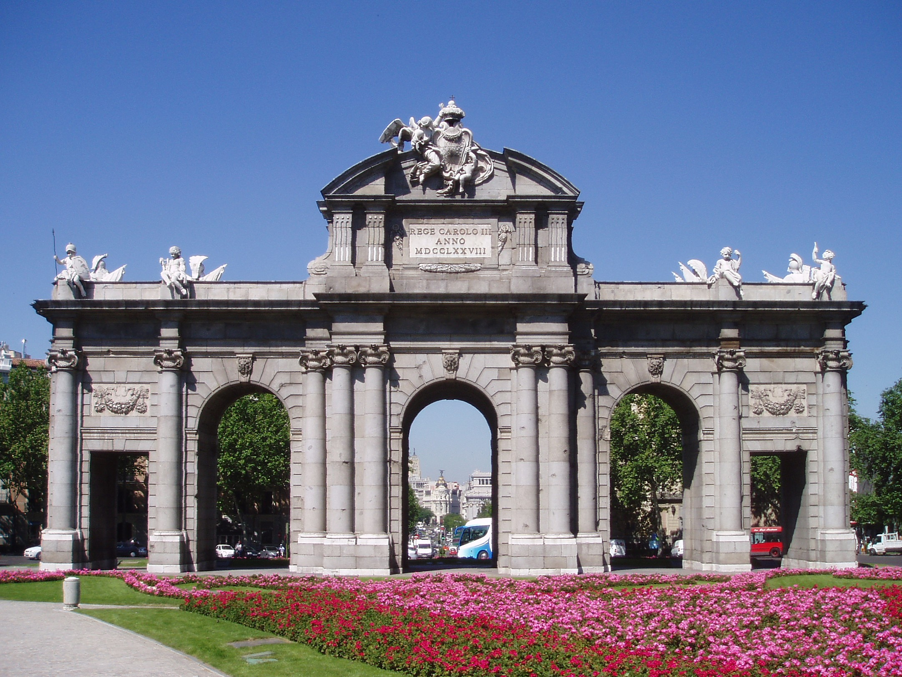
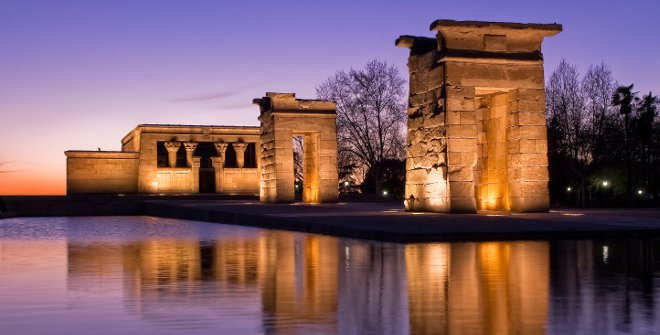

Tag 3:
Nachdem die Museen und das Stadtzentrum besucht sind, ist es an der Zeit zu wandern. Dafür gehts ab zu verschiedenen berühmten Parks und Tourismuspunkten: Der Retiro, die Puerta de Alcalá und der Templo de Debod.
Der Retiro
Der Retiro ist einer der grünen Lungen Madrids. Mit seinen 125 Hektar und 15 000 Bäume ist es der perfekte Ort um Sport zu treiben oder um spazieren zu gehen.
Die Anzahl an Statuen und Brunnen, sowie andere Arten von Monumenten machen für einen aufregenden Spaziergang durch diese grüne Oasis.
Auch die verschiedene Arckitektur versteckt in den verschiedenen Gebäuden im Retiro sind bewundernswert. Es stechen vor allem der Palacio de Cristal und der Palacio de
Velazquez heraus.
Mehr Information kann man hier finden.

La Puerta de Alcalá
Einer der 5 Tore, die einst eintritt zur Stadt gewährten.
Es war der erste seiner Art in Europa und ist heute noch eine Sehenswürdigkeit, die man in seiner Reise nach Madrid sehen sollte.
Mehr Information über sie gibt es in dieser Website.

Essen
Nach einem langen spaziergang durch den Retiro und die besichtigung der Puerta de Alcalá, ist es an der Zeit eine Essenpause einzulegen.
El Templo de Debod
Dieses Geschenk von Ägypten zu Spanien ist vor allem Abends sehens würdig.
Mit einem hohen Blickwinkel auf Teile Madrids sind nicht nur die Ausblicke anziehend. Die verschiedenen Kapellen, verziert mit der originalen Ausmalung, sind auch bewundernswert.
Mehr über den Tempel kann man in dieser Website entdecken.

Der Abend
Nachedem der Templo de Debod verlassen wird, kann man gleich in dieser Gegend bleiben und die Gärten des Tempels im Stadtviertel Princesa besuchen.